A내 발명품
①~⑧ 내가 옮겨 적은 내용. 위 상자에서 노란색으로 보여요.
활동지 3번 칸에 쓴 내용을 번호에 맞춰 적어요. 칸 아래의 확인 문장이 초록색이면 제미나이가 알아듣기 좋은 문장이에요.
프롬프트에는 이름·학번 같은 개인정보를 쓰지 않아요. 발명품 이야기만 적어요.
[A]는 내가 쓴 부분, [B]는 마이크로비트와 통신하는 약속이에요. [B]는 고치지 않고 그대로 보내야 웹앱이 장치와 연결돼요.
빈 칸이 있어요. 눌러서 채우고 오세요. 비워 두면 제미나이가 마음대로 정해요.
①~⑧ 내가 옮겨 적은 내용. 위 상자에서 노란색으로 보여요.
통신 규칙, 화면 연출(상황 장면·상황 버튼), 센서 확인판, 연결 처리, 두 가지 모드, 버튼 오류 방지.
실제 수업 화면으로 따라 해요. 메모장 없이 제미나이에서 바로 HTML 파일을 내려받을 수 있어요.
새 채팅을 열고 입력창에 Ctrl + V로 붙여넣어요. 오른쪽 아래가 Pro인지 확인하고 ↑ 버튼을 눌러요.
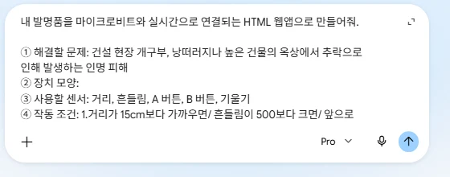
코드 창 위쪽의 미리보기를 눌러 화면이 나오는지 먼저 봐요. 그다음 내보내기 → 코드 다운로드를 눌러요.
.html 파일로 저장돼요.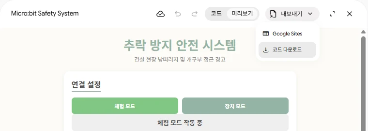
다운로드 폴더에서 파일을 한 번 누르고 F2를 눌러 이름을 바꿔요.
.html.html이 돼요.micro_bit_safety_system.html → 밤길등불_홍길동.html파일을 오른쪽 클릭 → 연결 프로그램 → Google Chrome으로 열어요. 파일을 크롬 창으로 끌어다 놓아도 돼요.
file:///…/밤길등불_홍길동.html로 바뀌면 성공이에요.<!DOCTYPE html>로 시작해 </html>로 끝나는지 확인해요.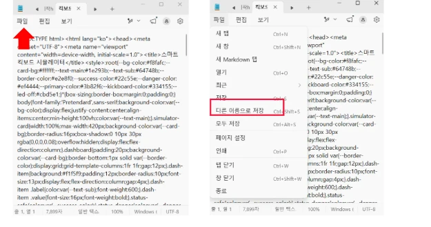
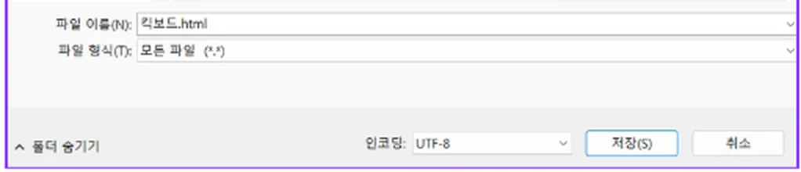
같은 프롬프트에 예시 ①~⑧을 넣었더니 제미나이가 이런 웹앱을 만들었어요. 내 웹앱에도 아래 네 가지가 있는지 비교해 봐요.
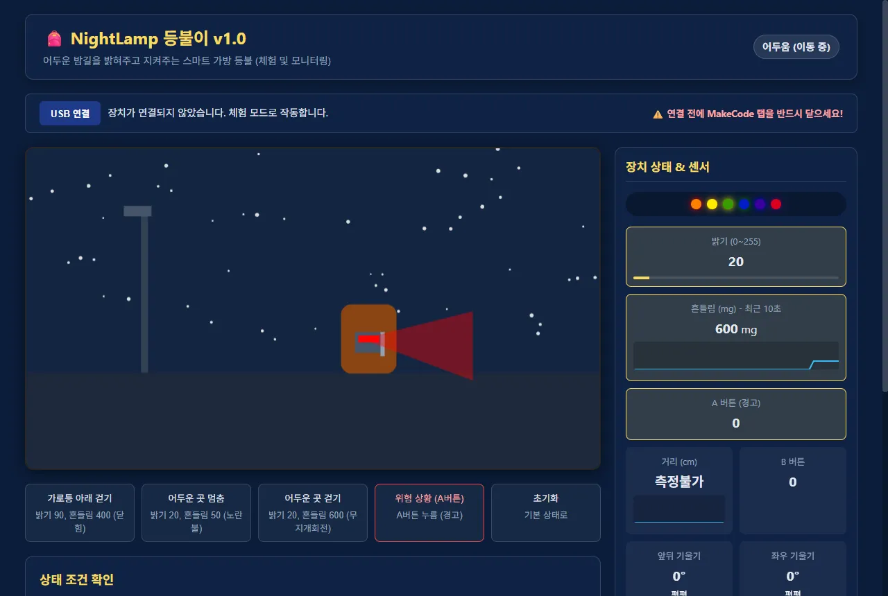
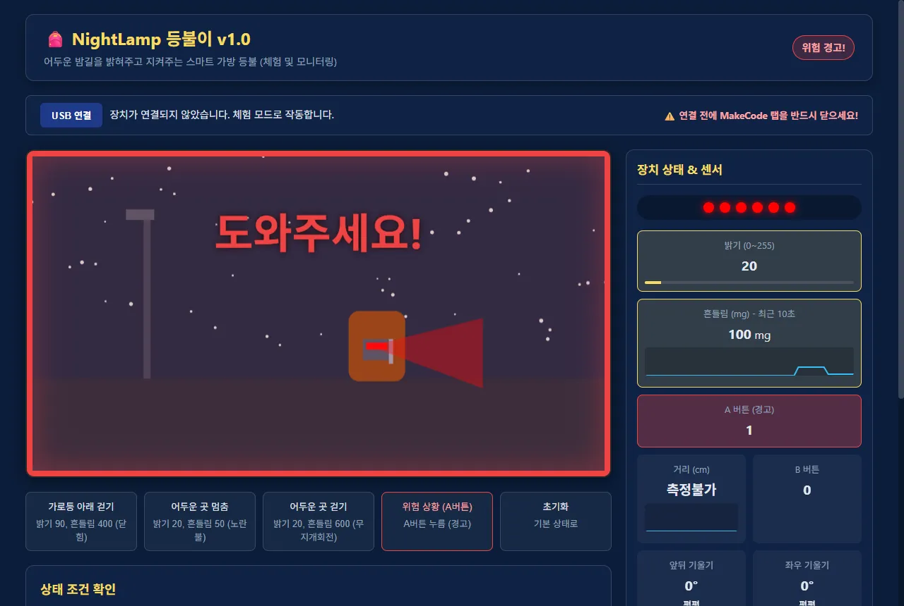
비슷하게 따라 만들 필요는 없어요. 내 발명품이 쓰이는 장소와 움직임을 살려서 나만의 장면을 만들어요.
하나씩 확인하고 체크해요. 안 되는 것이 있으면 아래 「이럴 땐 이렇게」에서 맞는 문장을 복사해 제미나이에 보내요.
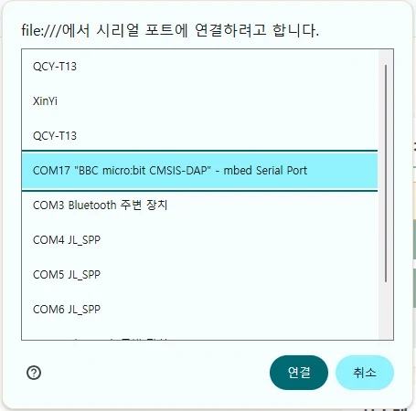
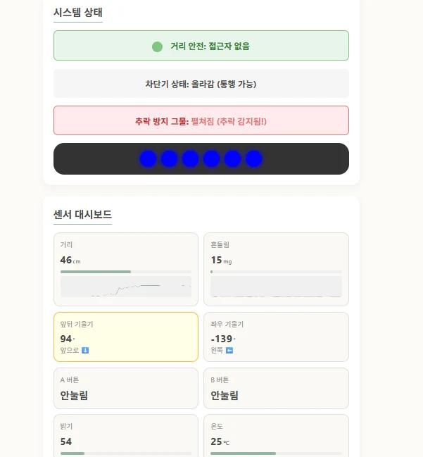
목록에 블루투스·이어폰(JL_SPP, QCY 등)도 보여요. 꼭 micro:bit이 들어간 항목을 골라요.
제미나이가 고친 코드를 주면 전체 코드를 다시 복사해, 같은 파일 이름으로 덮어 저장하고 크롬에서 F5로 새로고침해요.
1단계에 쓴 ①~⑧로 작품 소개 카드가 저절로 만들어져요. 카드를 보며 1분 동안 발표하고, 클래스룸에 HTML 파일을 제출해요.
조원 4명이 한 사람씩 차례로 발표자가 돼요. 발표자의 노트북에 웹앱과 장치를 켜 두고, 나머지 3명이 직접 체험하며 이야기 나눠요.
내가 체험한 조원 3명의 작품을 아래에 적어 두면 6단계 느낀 점에 쓸 수 있어요.
「제안」은 고칠 점을 콕 집어 친절하게 적어요. 예: “버튼을 누르면 소리도 나면 더 잘 알 것 같아요.”
클래스룸에서 html 결과물 제출하기 과제를 열어요. 오른쪽 내 과제 칸의 + 추가 또는 만들기를 눌러요.
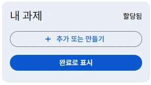
메뉴에서 파일을 눌러요. Docs·Slides처럼 새로 만드는 것은 고르지 않아요.
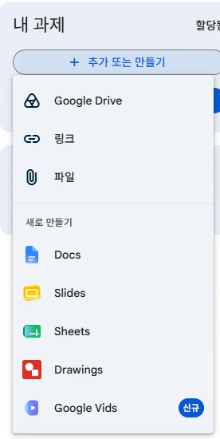
업로드 탭에서 내 HTML 파일을 끌어다 놓거나 「찾아보기」로 골라요. 막대가 끝까지 차면 내 과제에 파일이 붙어요.
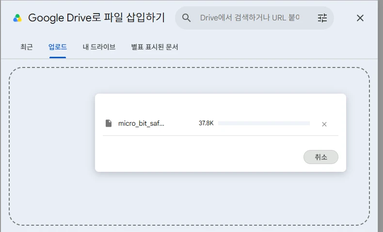
파일이 붙으면 「완료로 표시」 버튼이 「제출」로 바뀌어요. 누르고, 확인 창에서 한 번 더 제출을 눌러요.
질문에 답하면 투닝 AI에 올릴 글이 한 덩어리로 만들어져요. 복사해서 선생님이 알려준 곳에 붙여넣어요.